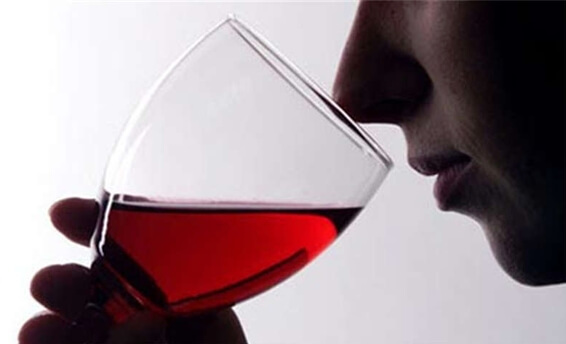
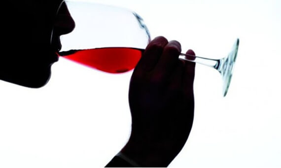

在倒好酒以后，品尝者应该手持杯脚以45度 角、合适的距离下进行观察；而后在摇动酒杯观 察酒液在杯壁上流动（酒柱）的状态。通过观察 酒的清澈度、色泽和强烈程度已经可以初步的体 现出酒的特质。
在酒倒入杯中静止下来以后就可以进行初次 闻香，然后是摇杯再次闻香（结合视觉）。好的 品尝者在进行了视觉和嗅觉对红酒的认识以后， 基本上已经可以确定了酒的特征质量。
品尝时要喝入适量的酒，最好布满整个口腔， 用舌头对酒进行充分的搅动来体味酒的结构和香 气；中间通过鼻子的吸气可使酒的特征更加明显。 最后将酒吐出或喝下，再体味一下后味的长短。